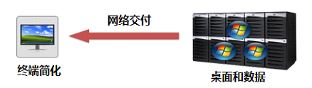
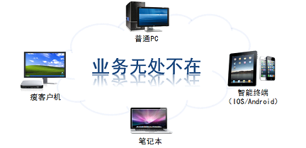
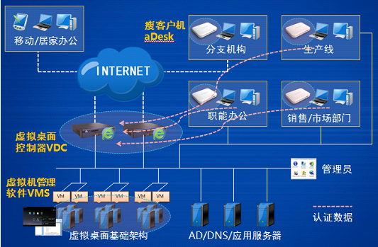
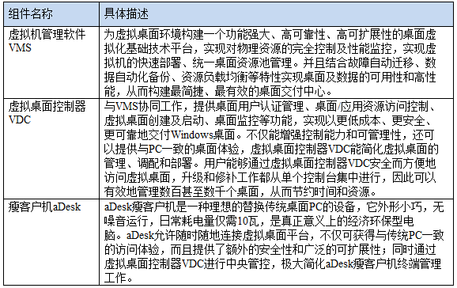

aDesk桌面云解决方案
一、桌面云概念定义

桌面云可以为企业的IT建设和运维带来巨大价值，所谓桌面云就是将用户桌面和数据集中部署在数据中心里（服务器），用户通过瘦终端或别的设备，利用虚拟交付技术去访问数据中心里的个人桌面，用现在比较流行的话来说就是“桌面云”，用云的方式随时随地交付个人桌面。

用户可以通过任意终端设备来访问属于自己的个人虚拟桌面，而且可以实现终端迁移功能，在多个终端间切换，不会影响原先的桌面操作行为，真正做到桌面随身行。目前支持PC、笔记本、瘦终端、iPad、iPhone、Android手机或智能终端等设备接入访问虚拟桌面。在运行过程中，每台服务器被虚拟成多台虚拟机，每用户独享一台虚拟机，并通过在虚拟机中安装OS、基础软件、办公应用等来满足基本办公需求。后端服务器虚拟化平台具有在线迁移、HA、数据备份等高级特性，可保证整合后平台的稳定可靠运行。
二、方案概述
（一）桌面云整体架构

整体桌面云方案是由瘦客户机aDesk、虚拟桌面控制器VDC、虚拟机管理软件VMS、服务器存储设备等组成，实现将企业员工的办公桌面统一部署于服务器上，员工的个人数据也集中存储，然后通过网络（局域网或广域网）将个人桌面系统快速交付给员工，员工可以通过各种不同类型的终端设备如瘦客户机、笔记本、手机及平板等随时随地接入办公。
（二）具体需要的方案组件

三、桌面云带来的变化
减少后期的运维成本。虚拟机模板技术让桌面上线时间缩短为10分钟左右，而技术人员也只需在“云端”进行软件维护，无需对每一台终端进行维护，单个IT管理员可轻松管理1000台终端或虚拟桌面以上，大大降低了维护的工作量和人力成本。
节省资金开销。云终端硬件高度集成，零部件极少，损坏更换的概率极低，几乎没有维修费用，无人为损坏可使用8-10年，比传统电脑长一倍，使用周期的延长，大大降低设备更新的周期和成本。相反，传统PC机零部件复杂，损坏老化概率高，更新维修费用极为昂贵。当然，由于瘦终端日常耗电量仅需10W，可以帮助客户节省大量的电力成本。
减少用户停机维护时间，时刻保证业务正常运营。同时桌面云将所有的数据集中存储在数据中心，像笔记本、瘦终端这样的前端设备只接收图像，整个业务过程里数据是不落地的，是非常安全的，不仅可以随时随地通过各类终端访问桌面，而且集中化的部署方式也更有利于IT部门利用技术手段来保证信息资产安全。